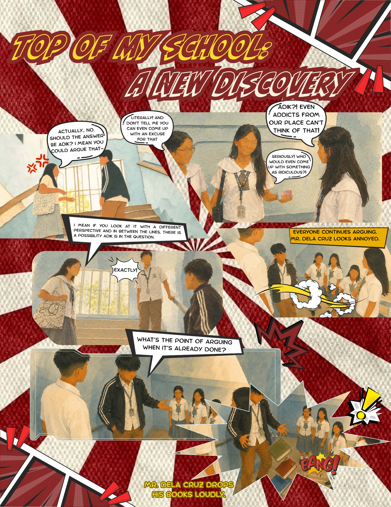
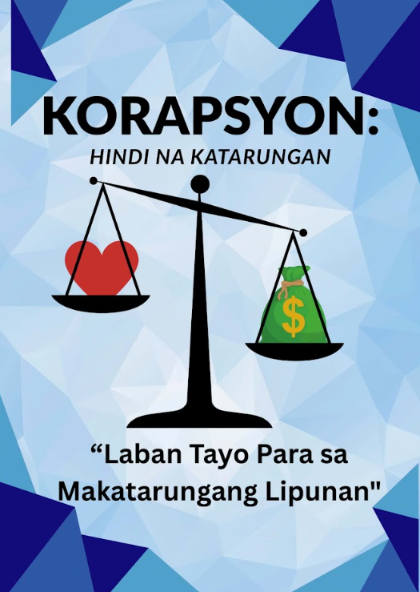
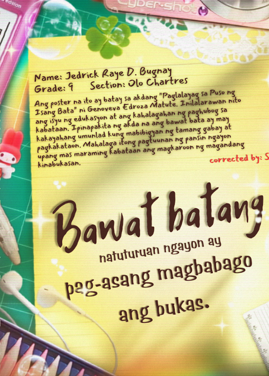
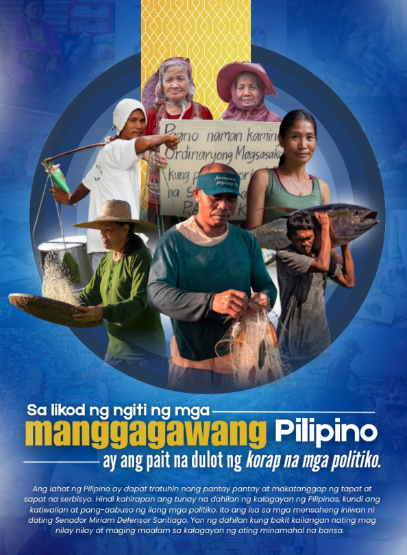
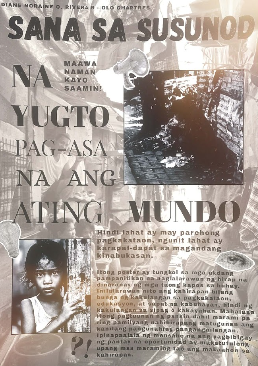

Literary

| Literay Analysis | |||
|---|---|---|---|
| Tauhan |
Mr. Dela Cruz - A teacher working under pressure. Noraine - A smart student under pressure. Mika - A naturally smart student. Mary - An average but active student. Layla - A quiet average student. James - A student focused on graduating. Joshua - A student who skips school. |
Banghay | The story follows students struggling with the new curriculum. Two students, one naturally smart and one academically hardworking, compete to reach the top. Their rivalry catches the attention of a teacher who relates to their experiences. |
| Tagpuan | School - Present time (2026) | Tema | Finding a new version of yourself, amidst the tempest of emotions. |
| Tunggalian |
Character vs. Self - Pressure and self-doubt. Character vs. Character - Competing academically. |
Mensahe | Small changes can lead to a better and healthier life. |
Filipino Poster/Slogan



